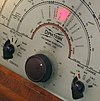

longwave
attribute

Source: Wikipedia
Wikipedia Page (Something wrong with this association? Let us know.)
Wikidata Page (Something wrong with this association? Let us know.)
Occurs in:
- land_surface_air_radiation~longwave~downwelling__energy_flux
- land_surface_air_radiation~longwave~downward__energy_flux
- atmosphere_aerosol_radiation~outgoing~longwave_emission__emittance
- atmosphere_aerosol_radiation~outgoing~longwave~downward__energy_flux
- atmosphere_aerosol_radiation~outgoing~longwave~upward__energy_flux
- atmosphere_air_radiation~incoming~longwave_absorption__absorptance
- atmosphere_air_radiation~incoming~longwave_reflection__reflectance
- atmosphere_air_radiation~incoming~longwave_transmission__transmittance
- atmosphere_clouds_radiation~outgoing~longwave_emission__emittance
- atmosphere_clouds_radiation~outgoing~longwave~downward__energy_flux
- atmosphere_clouds_radiation~outgoing~longwave~upward__energy_flux
- atmosphere_top_radiation~incoming~longwave__energy_flux
- atmosphere_top_radiation~outgoing~longwave__energy_flux
- atmosphere_top_surface_radiation~incoming~longwave__energy_flux
- earth_surface_radiation~incoming~longwave__energy_flux
- glacier_top_surface_radiation~incoming~longwave__energy_flux
- glacier_top_surface_radiation~outgoing~longwave__energy_flux
- land_surface_radiation~incoming~longwave~absorbed__energy_flux
- land_surface_radiation~incoming~longwave_absorption__absorptance
- land_surface_radiation~incoming~longwave_emission__emittance
- land_surface_radiation~incoming~longwave__energy_flux
- land_surface_radiation~incoming~longwave_reflection__reflectance
- land_surface_radiation~incoming~longwave~reflected__energy_flux
- land_surface_radiation~net~longwave__energy_flux
- land_surface_radiation~outgoing~longwave_emission__emittance
- land_surface_radiation~outgoing~longwave~emitted__energy_flux
- land_surface_radiation~outgoing~longwave__energy_flux
- sea_bottom_radiation~incoming~longwave~absorbed__energy_flux
- sea_bottom_radiation~incoming~longwave_absorption__absorptance
- sea_bottom_radiation~incoming~longwave__energy_flux
- sea_bottom_radiation~incoming~longwave_reflection__reflectance
- sea_bottom_radiation~incoming~longwave~reflected__energy_flux
- sea_bottom_radiation~outgoing~longwave_emission__emittance
- sea_bottom_radiation~outgoing~longwave~emitted__energy_flux
- sea_ice_radiation~incoming~longwave~absorbed__energy_flux
- sea_ice_radiation~incoming~longwave_absorption__absorptance
- sea_ice_radiation~incoming~longwave_reflection__reflectance
- sea_ice_radiation~incoming~longwave~reflected__energy_flux
- sea_ice_radiation~incoming~longwave_transmission__transmittance
- sea_ice_radiation~incoming~longwave~transmitted__energy_flux
- sea_ice_radiation~outgoing~longwave_emission__emittance
- sea_ice_radiation~outgoing~longwave~downward__energy_flux
- sea_ice_radiation~outgoing~longwave~upward__energy_flux
- sea_surface_radiation~outgoing~longwave__energy_flux
- snowpack_radiation~incoming~longwave~absorbed__energy_flux
- snowpack_radiation~incoming~longwave_absorption__absorptance
- snowpack_radiation~incoming~longwave__energy_flux
- snowpack_radiation~incoming~longwave_reflection__reflectance
- snowpack_radiation~incoming~longwave~reflected__energy_flux
- snowpack_radiation~outgoing~longwave_emission__emittance
- snowpack_radiation~outgoing~longwave~emitted__energy_flux
- land_surface_radiation~longwave~downward__energy_flux